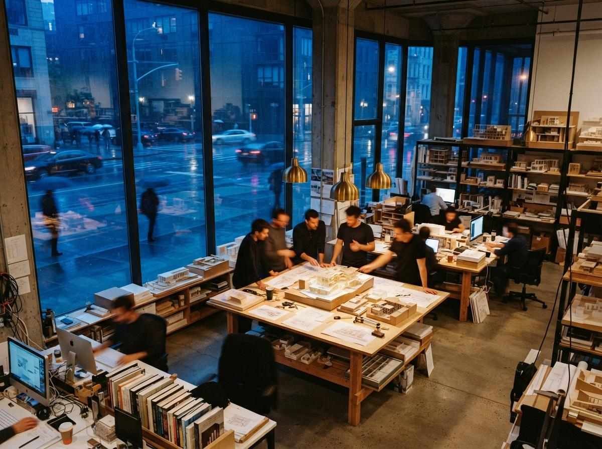
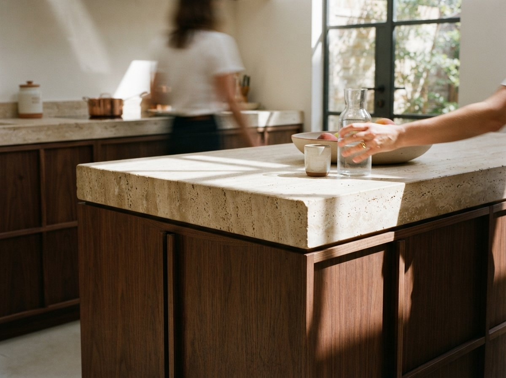

The interior threads keep surfacing the same frustration. A 3D artist on r/comfyui this week described moving from exterior archviz into interior work and watching a workflow that had been reliable start producing rooms that no longer matched the model. Over on the Flux side, the request was for a graph that adds realistic lighting, textures, and reflections to an interior while keeping the composition intact. Those are two descriptions of one wall. Inside a room, the model has less to infer and more to wreck, and the defaults that gave an exterior its pleasant looseness are exactly what break an interior. Here is what changes, and how to set each dial for a space with a ceiling.
The light has nowhere to come from
Outdoors, a diffusion model has an easy time with light. There is a sky, the sky has a direction, and the shadows follow from it. The model has seen a million daytime exteriors and it knows how the sun behaves. Indoors, all of that vanishes. The light has to enter through windows and bounce off surfaces the model cannot reason about, and it has to respect fixtures that are sitting in the frame. Ask for "warm evening light" in a room and a careless graph will brighten the whole image evenly, flatten the depth, and sometimes punch a glowing window into a wall that did not have one, because the model decided a room that bright needed a source.
The fix is to stop asking the model to invent the lighting and start giving it a base that already has the lighting roughly right. If your input render has the windows where they are, the lamps reading as lit, and the shadows falling in believable directions, the model refines what is there instead of guessing. A flat, evenly lit clay render is the worst possible interior input, because it hands the model a blank room and full permission to light it however it likes. Spend the extra few minutes getting a rough light setup into the base image. The model is a finisher here, not a lighting designer.

Lock the room before you light it
The single biggest interior failure is the model redesigning your space. Furniture slides, a kitchen island grows, a doorway shifts a foot to the left. This is not a prompt problem and you cannot write your way out of it. The prompt describes style; it does not pin geometry. Geometry is held by control inputs, and interiors need more of them than exteriors do because there is more structure packed into a tight frame.
Run a depth map and an edge control together. The depth map preserves the volume of the room and the position of the big masses, the sofa, the island, the bed, so they stay where you put them. The edge or line control holds the hard boundaries, the cabinetry faces, the window frames, the trim, the places where a few pixels of drift read instantly as wrong. With both active at moderate weight, the model restyles materials and light while the room stays the room. This is the same structure-first logic we walked through for exteriors in turning a sketch into a photoreal exterior, but indoors the weights have to be firmer, because a viewer standing inside a space notices a moved wall that they would never catch in a distant exterior.
Denoise is the dial that erases your space
Denoise decides how much freedom the model has to repaint the image, and on interiors it is the setting people get most wrong. The instinct carried over from exteriors and from text-to-image is to push it high for a richer result. Indoors that is how you lose the room. At a denoise around 0.7, the model has enough latitude to move furniture, change the floor plan, and invent openings, and it will use all of it. At 0.35 to 0.5 on an image-to-image pass, it has just enough room to upgrade materials, fix the light, and add the reflections and texture you wanted, while the structure stays locked.
There is an honest trade here, not a free setting. Low denoise protects your geometry but inherits the flaws of your base image, so a weak input stays weak. The better your starting render, the higher you can safely climb. The workflow that holds is iterative: start low, confirm the room survives, then nudge denoise up in small steps until you see the first sign of the model taking liberties, and back off one notch. Treat the dial as a leash, not a quality slider.

Materials read up close
An exterior hides its material sins in distance. A facade two hundred feet away can be approximate and nobody minds. An interior puts the camera three feet from a countertop, and now the model has to render a convincing stone, a believable wood grain, a fabric weave that does not look sprayed on. This is where generic checkpoints fall down and where an interior-trained model or a material-specific reference earns its place. The close framing that makes interiors hard is also what makes them rewarding, because a room that reads right at arm's length is genuinely persuasive in a way an exterior rarely needs to be.
Two practical moves. First, prompt materials by name and finish, not by vibe: "honed Carrara counter, rift-sawn white oak, brushed brass" gives the model anchors that "luxury kitchen" does not. Second, do the heavy material work in a second pass at low denoise after the structure is locked, so the model can concentrate on surface without renegotiating the room. If you want to push detail further without a monster GPU, the same cloud approach we covered for running ComfyUI without a local card applies here, since interiors at high resolution are where the memory bills arrive.
| Setting | Exterior default | Interior that holds |
|---|---|---|
| Denoise | 0.55 to 0.75, looseness welcome | 0.35 to 0.5, protect the layout |
| Control inputs | One depth or edge, light touch | Depth and edge together, firmer weight |
| Base lighting | Model infers from sky | Must be in the input; model only refines |
| Materials | Distance forgives | Named finishes, second low-denoise pass |
An exterior asks the model to imagine. An interior asks it to behave. Set every dial for restraint and the room survives the render.
Our take: finish the room, do not regenerate it
The mistake that runs through every broken interior is treating the model as a designer when the design is already done. The room exists. You drew it, you placed the furniture, you know where the windows are. ComfyUI's job indoors is to make that room look like a photograph, not to propose a new one. Every setting that matters, the low denoise, the doubled control inputs, the lighting baked into the base, points the same direction: give the model less freedom, not more, and spend your effort on the input rather than the prompt.
Architects who came to interiors from a working exterior graph tend to learn this by ruining a few renders first. You do not have to. Build a separate interior workflow with restraint as its default, keep the structure controls firm, and accept that a room is a finishing job, not a generation job. Do that and the same tool that kept rearranging your furniture starts producing interiors a client believes. The room stops fighting the model the moment you stop asking the model to redraw the room.
Drawn from this week's intel sweep, where community threads on r/comfyui and r/FluxAI surfaced architects and 3D artists moving from exterior to interior visualization and finding their proven workflows breaking on enclosed spaces. Settings here are starting points to test against your own base renders, not fixed numbers. No affiliate relationship with any tool or model named.